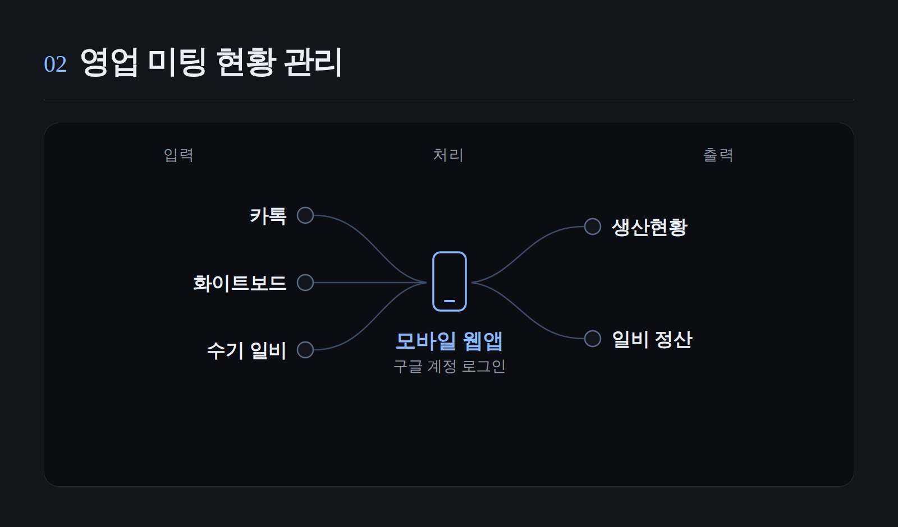
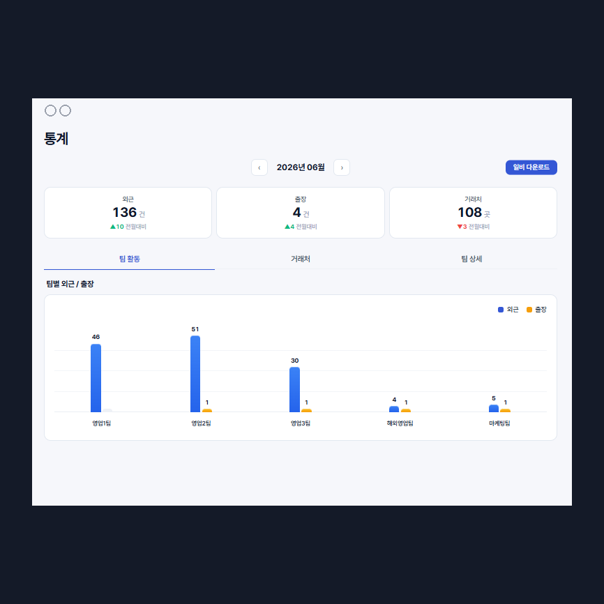
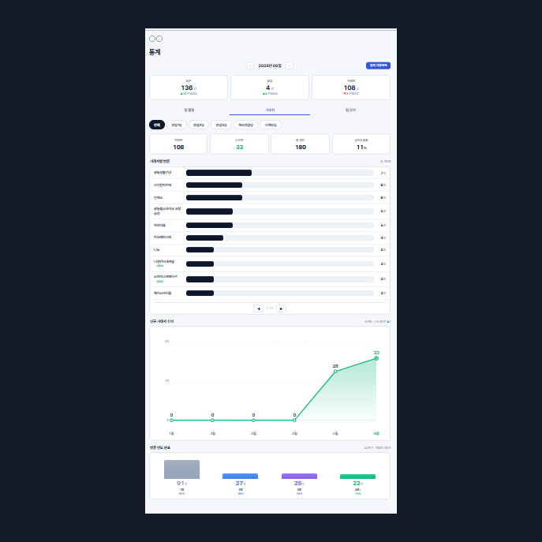
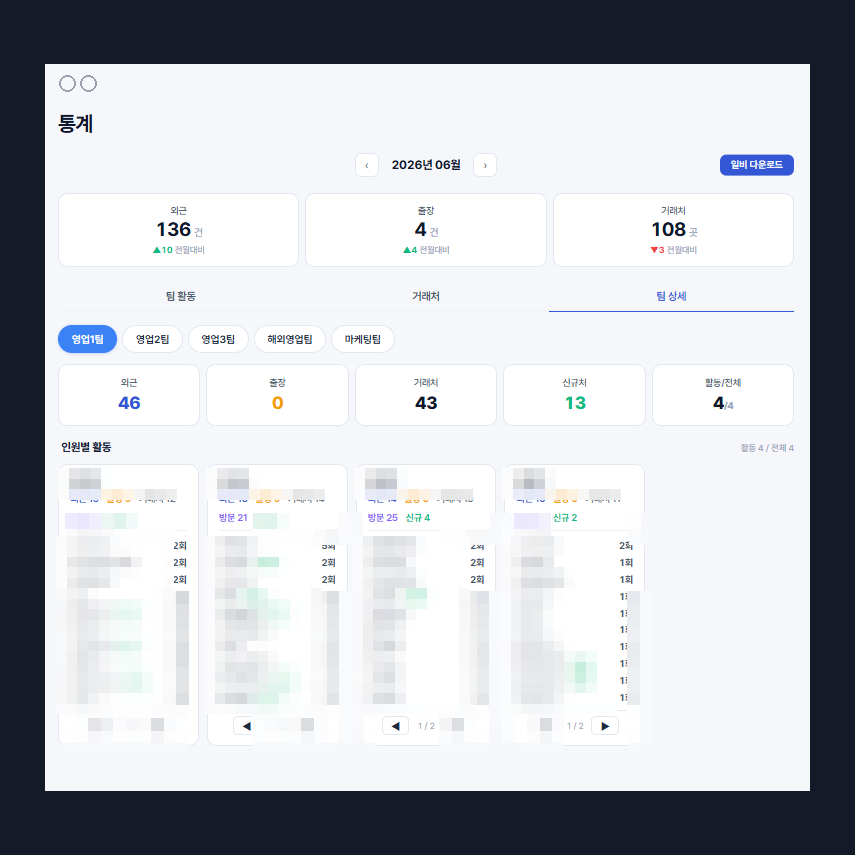
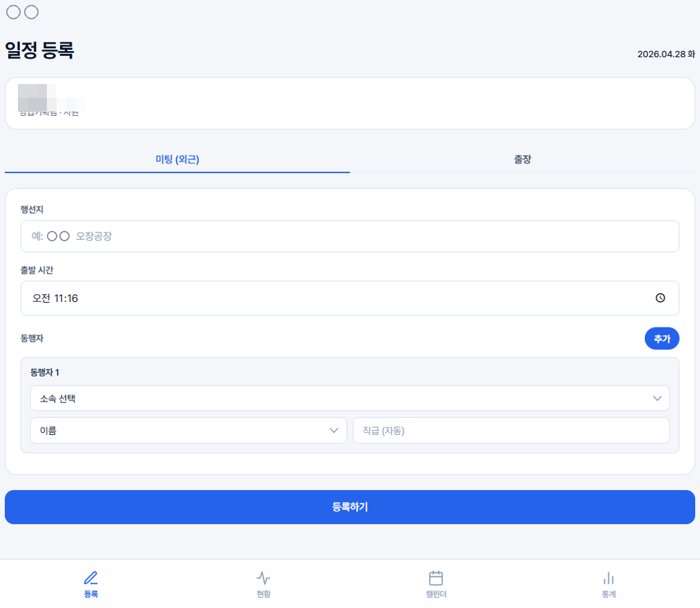
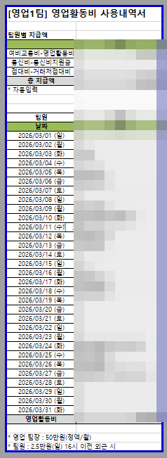
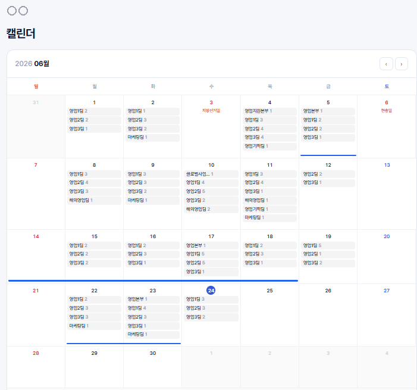
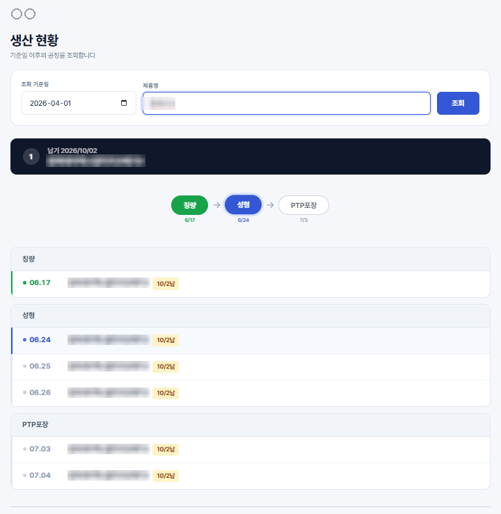
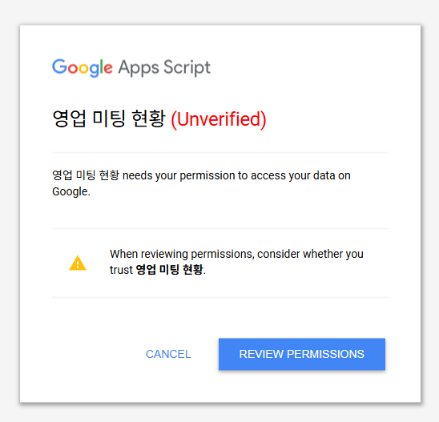
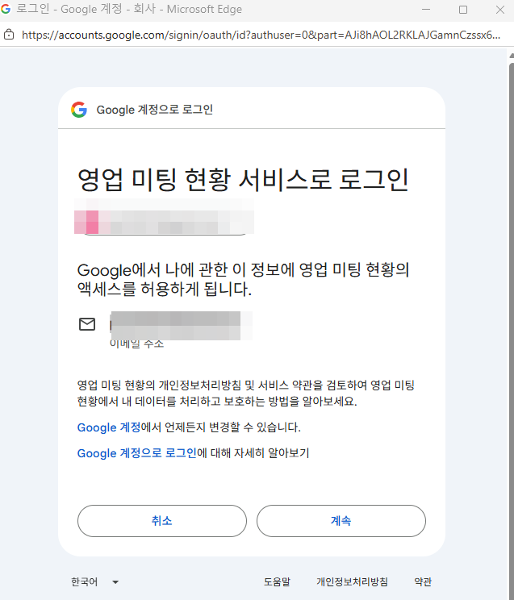

카톡과 화이트보드에 이중으로 남기던 보고를 모바일 웹앱 하나로 옮기고 월말 일비를 자동으로 정리합니다.

영업팀은 월 마감마다 카톡 대화를 거슬러 올라가 행선지를 다시 찾고,
양식에 옮겨 적고, 엑셀로 저장해 결재를 올렸습니다.
등록·현황·캘린더·통계·생산조회를 한 웹앱에 담아
현장에서 기록하면 일비 양식과 KPI가 자동으로 만들어지게 했습니다.
기록은 있지만 찾는 데 어려움이 있고,
미팅 현황에 대한 통계는 없었습니다.
카톡에 한 번, 사내 화이트보드에 또 한 번.
같은 보고를 두 곳에 이중 입력했습니다.
한 달치 카톡을 거슬러 올라가 행선지를 찾고
일비 엑셀을 수기로 작성했습니다.
신규처·기존처 방문 실적이 전부 수기라
집계 자체가 불가능했습니다.
NAS 엑셀을 열어 Ctrl+F로 찾아야 했고,
외부에서는 사무실에 전화로 물었습니다.
등록부터 통계까지 영업 현장에서 바로 쓰는 도구입니다.
하단 탭으로 모든 기능에 한 번에 접근합니다.
미팅·출장을 현장에서 바로 입력
오늘 누가 어디 갔는지 실시간 확인
팀별 일정을 달력으로 조회
신규처·기존처 KPI 자동 집계
생산현황을 검색 한 번으로
신규처를 몇 곳, 기존처를 몇 번.
핵심 지표를 손대지 않아도 집계됩니다.



현장에서 한 번 기록하면
월말 일비 양식이 엑셀로 그대로 떨어집니다.


거래처 명단과 대조해 신규·기존을 자동으로 나눕니다.
KPI 집계가 별도 작업 없이 따라옵니다.
직급별 일비 금액과 외근 성립 조건을 규칙으로 넣었습니다.
사람이 금액을 다시 계산하지 않습니다.
누가 언제 어디로 나갔는지,
팀별로 색이 구분된 달력에서 바로 파악합니다.

사내 공유드라이브의 생산계획표를
밖에서도 제품명만 입력하면 공정 흐름으로 봅니다.

Google 인프라에서 실행됩니다.
도메인·SSL·호스팅·DB서버가 필요 없습니다.
직원 구글 계정으로 자동 로그인됩니다.
getActiveUser 한 줄이면 됩니다.
Google Sheets가 그대로 DB입니다.
담당자가 시트에서 직접 확인하고 고칩니다.
코드를 붙여넣고 배포 버튼을 한 번 누릅니다.
CI/CD도 도커도 쓰지 않습니다.
값이 틀리면 개발자를 거치지 않고 시트에서 바로 고칩니다.
채택과 신뢰 확보에 이것이 결정적이었습니다.
동시 접속 50명 이상이면 느려지고 실행에 6분 제한이 있습니다.
현재 20명 안팎이라 문제없고, 필요해지면 React + Supabase로 전환을 검토합니다.
추가 서버 없이 사내 NAS 파일과 Google 인프라만으로
데이터가 한 방향으로 흐릅니다.
모든 처리가 동기화용 PC 1대와 Google 인프라에서 끝납니다.
별도 서버도, DB도, 호스팅도 두지 않았습니다.
접근은 최소 권한으로, 흐름은 한 방향으로.
원본 파일은 손대지 않습니다.
사내 공유 폴더의 엑셀을 openpyxl 읽기 전용으로 열어 내용만 추출합니다.
원본 파일을 수정하거나 잠그지 않습니다.
90초마다 파일 수정시각(mtime)만 비교합니다.
변경이 없으면 아무 동작도 하지 않습니다.
추출한 데이터는 Google Sheets에 덮어쓰기로 반영합니다.
웹앱은 이 시트만 조회하므로 사용자는 NAS에 직접 접근하지 않습니다.
Google API 권한을 spreadsheets와 drive.readonly로 제한했습니다.
드라이브 파일을 만들거나 지울 권한은 없습니다.
별도 로그인 화면을 만들지 않고 구글 계정 인증을 그대로 씁니다.
대신 누가 무엇을 했는지는 전부 남깁니다.
사용자목록 시트의 회사·개인 이메일과 대조합니다.
미등록 이메일은 시도를 로그에 남기고 접근을 차단합니다.
타인 미팅 수정·삭제와 사용자 관리는 관리자만 가능합니다.
일반 사용자는 본인이 등록한 건만 고칠 수 있습니다.
checkMeetingAccess로 요청자와 작성자를 매번 대조합니다.
화면에서 가리는 것이 아니라 서버에서 막습니다.
등록·수정·삭제·복귀 모든 행위를 writeLog로 남깁니다.
문제가 생기면 시점과 주체를 되짚을 수 있습니다.


모바일과 PC 어디서든 같은 화면을 봅니다.
외근 중에 사무실로 전화할 일이 없어졌습니다.
흩어진 엑셀 대신 Google Sheets 한 곳만 봅니다.
같은 숫자를 두 번 적을 일이 없습니다.
실사용자가 20명 안팎이라 별도 서버와 웹 배포까지 갈 필요가 없었습니다.
도구를 먼저 고르지 않고 규모를 먼저 봤습니다.
초기 데이터를 사용자·명단·거래처·현황으로 나눠 여러 번 불렀습니다.
한 번의 서버 호출로 묶어 초기 로딩을 줄였습니다.
담당자가 시트에서 직접 고칠 수 있는 구조가 채택과 신뢰 확보에 결정적이었습니다.
잘 만든 것보다 손댈 수 있는 것이 오래 갔습니다.